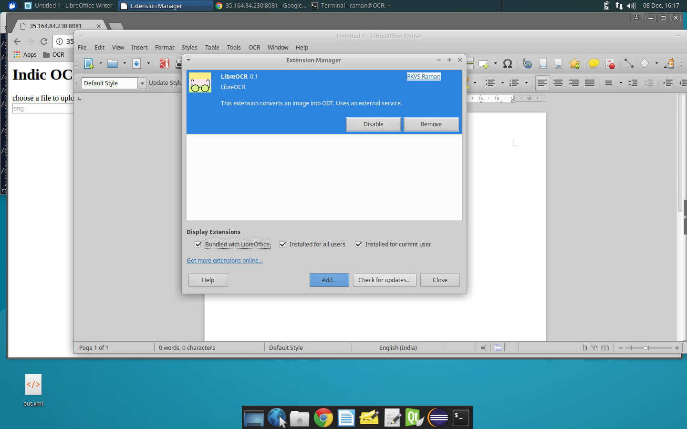
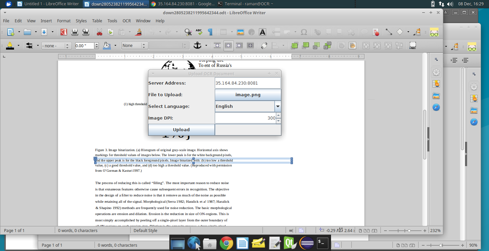
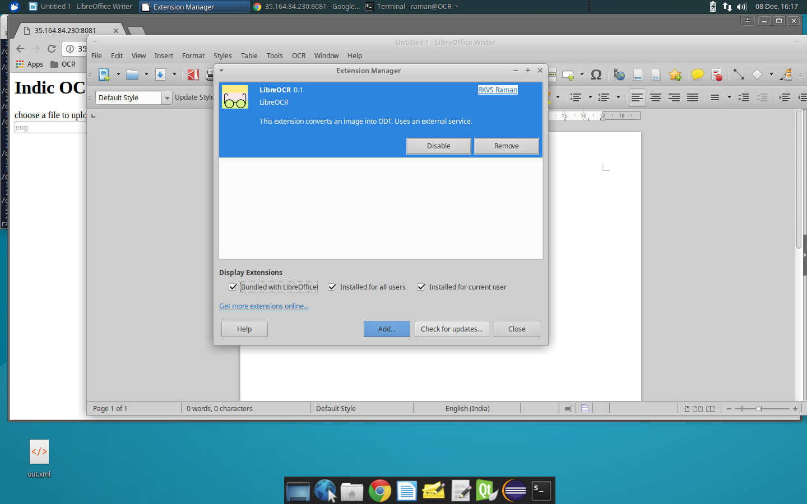
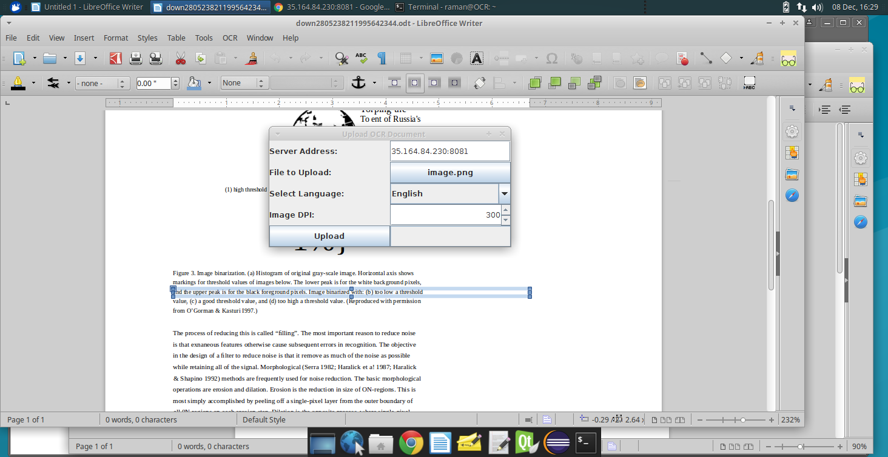

LibreOCR
LibreOCR uses OCR Service to convert uploaded images to editable ODT documents.
LibreOCR is a Libreoffice extension that provides a tool bar button to upload images.
Install the extension from here or here


LibreOCR uses OCR Service to convert uploaded images to editable ODT documents.
LibreOCR is a Libreoffice extension that provides a tool bar button to upload images.
Install the extension from here or here

